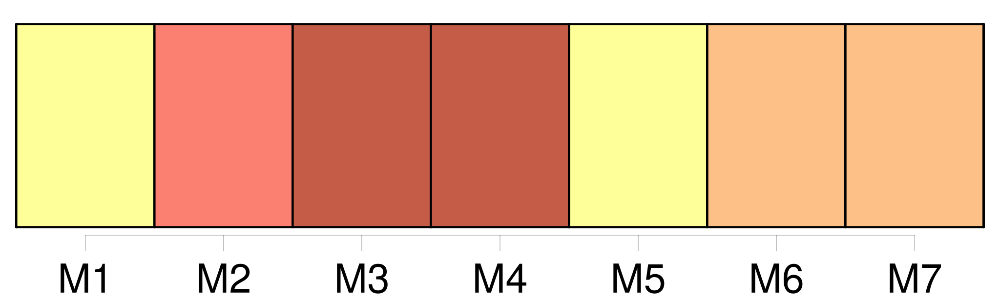
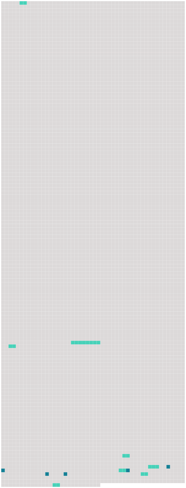

Longueur nb maillons : 13 mentions |
  |
» Il me prit par [le bras] et me conduisit à la salle funèbre ; je pleurais aussi fort que lui, car j’ avais compris que la morte n’ était autre que cette Clarimonde tant et si follement aimée. [173 phrases] J’ avais [un bras passé derrière la taille de Clarimonde] et une de ses mains ployée dans la mienne ; elle appuyait sa tête à mon épaule, et je sentais sa gorge demi-nue frôler [mon bras] [56 phrases]
Quand elle se fut bien assurée que je dormais, elle découvrit [mon bras] et tira une épingle d’ or de sa tête ; puis elle se mit à murmurer à voix basse : [7 phrases] [le beau bras] !! comme [il] est rond!! comme [il] est blanc!! [1 phrases] » Et, tout en disant cela, elle pleurait, et je sentais pleuvoir ses larmes sur [mon bras] [qu’] elle tenait entre ses mains. Enfin elle se décida, me fit une petite piqûre avec son aiguille et se mit à pomper le sang qui [en] coulait.
Quoiqu’ elle [en] eût bu à peine quelques gouttes, la crainte de m’ épuiser la prenant, elle m’ entoura avec soin [le bras] d’ une petite bandelette après avoir frotté la plaie d’ un onguent qui la cicatrisa sur-le-champ. [3 phrases] Je me serais ouvert [le bras] moi -même et je lui aurais dit : « Bois!! |
 |
La ressource peut être téléchargée sur la page Ortolang
Si vous avez des questions ou vous voyez des erreurs, merci d'envoyer un mail à silvia.federzoni89@gmail.com
Site développé par S. Federzoni (contact)